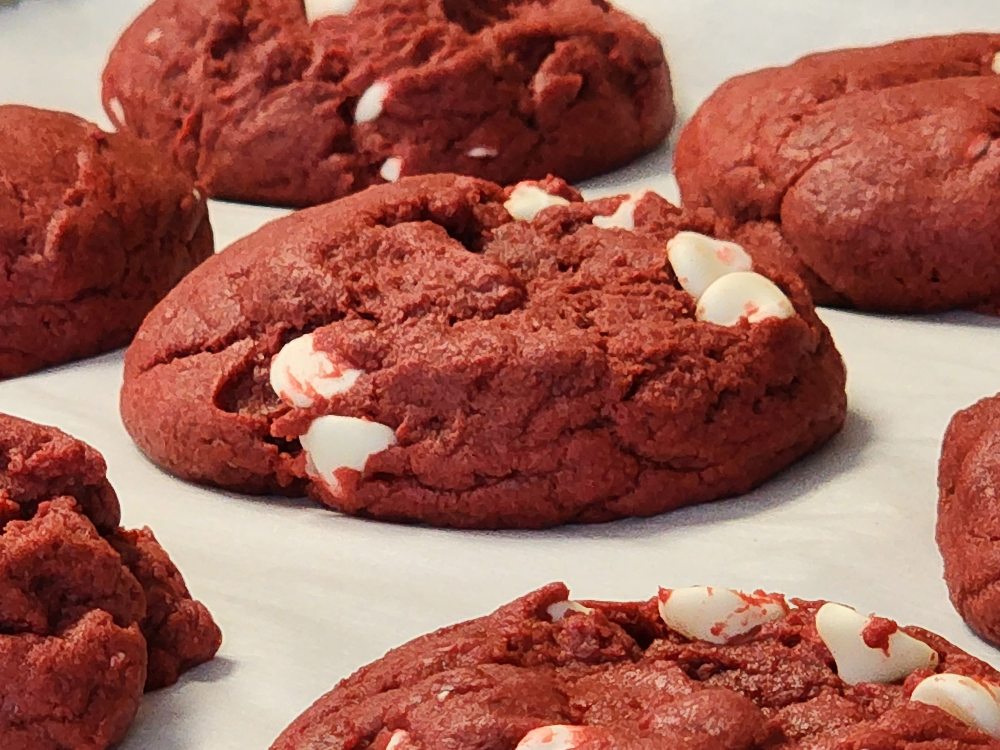

red velvet cookies
ingredients
-
butter
- butter can be salted or unsalted
- to soften, unwrap and let it sit at room temperature for ~30 minutes until it gets dented by lightly poking
- (granulated) sugar
- (dark) brown sugar
- large eggs
- vanilla extract
- vinegar
-
red (or blue?) food coloring
- I suppose any color could work, but I've never tried adding blue food coloring (people don't want me to)
- (all-purpose) flour
- cocoa powder
- cornstarch
- baking soda
- salt
- white chocolate chips
- stand mixer with flat beater attachment
- cookie scoop
- 2 baking sheets
- parchment paper
- oven at 350°f
- big cool-looking plate
instructions
soften 1 cup butter
beat the butter, 1 cup (granulated) sugar, and 2/3 cup (dark) brown sugar using the stand mixer with the flat beater attachment
beat in 2 large eggs, ~6 teaspoon vanilla extract, 2 teaspoon vinegar, and 2 teaspoon red food coloring
beat in 3 1/3 cup (all-purpose) flour, 3 tablespoon cocoa powder, 4 teaspoon cornstarch, 1 1/2 teaspoon baking soda, and 1/2 teaspoon salt
beat in 1 cup white chocolate chips until thick and sticky
preheat the oven to 350°f
line 2 baking sheets with parchment paper
form the cookie dough into loosely packed balls about 1 1/4 tbsp in size and place 2 inches apart on the baking sheets
- use a cookie scoop to help
- at the very least, be able to place cookies in a 5x3 grid
bake for 9 minutes or until the tops are just set
let them chill at room temperature for 5+ minutes
transfer to a cool-looking plate big enough to stack the red velvet cookies on nicely

but what if it was blue?